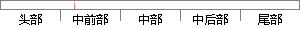

概率统计建立的模型是采用某种概率密度函数的一组参数作为语音模型。
片段位置图

相似结果|
相似片段 1：特征参数和动态特征参数的辨识效果。4．2模型的定义用概率统计模型辨识方言就是采用某种概率函数来描述方言的语音特征空间的分布情况以及用该概率密度函数的一组参数作为方言的辨识模型。基于高斯混合模型的方言辨识系统
相似片段 2：(4)多项式分类器方法。有较高的精度，但模型存储和计算量都比较大。第二类：基于参数模型的方法参数模型是指采用某种概率密度函数来描述说话人的语音特征空间的分布情况，并以该概率密度函数的一组参数来作为
相似片段 3：而VQ方法则是通过聚类、量化的方法生成码本，识别时对测试数据进行量化编码，以失真度的大小作为判决的标准。参数模型是指采用某种概率密度函数来描述说话人的语音特征空间的分布情况，并以该概率密度函数的一组
相似片段 4： Model，HMM)和高斯混合模型(Gaussian Mixture Model，GMM)，它的原理是采用某种概率密度函数描述说话人的语音特征序列在特征空间的分布，并以此概率密度函数的一组参数描述每个说话人的个性。
相似片段 5：序列)。模型参数包括HMM拓扑结构、状态转移概率及描述观察符号统计特性的一组随机函数。按照随机函数的特点，HMM模型可分为离散隐马尔可夫模型(采用离散概率密度函数，简称DHMM)和连续隐马尔可夫模型f
相似片段 6：的GMM识别模型基于概率统计原理的GMM充分考虑到人类的语音具有不稳定性，会随着说话人的情感、时间、地点及自身健康状况的变化而发生相应的变化。于是通过某种特定的概率密度函数来描述人类语音信号在特征空间
相似片段 7：语音时变信号某一段的特征就由对应状态观察符号的随机过程描述，而信号随时间的变化由隐蔽马尔可夫链的转移概率描述。模型参数包括H删拓扑结构、状态转移概率及描述观察符号统计特性的一组随机函数。按照随机函数
相似片段 8：取决于不同说话人的条件概率密度函数，该函数可以从训练语音中估计得到。在给出了估计的密度后，概率值就可以确定了。估计得到的概率密度函数可以分为参数型和无参型两类。通过这类模型，说话人的每一帧(或是一组帧
|
※ 片段修改建议 ※
近似词参考：- 概率：几率
- 建立：成立 创立 创设 建树 确立 设立建设 竖立 创建 树立
- 模型：模子
- 采用：采取 接纳 采纳
- 模型：模子
系统自动生成语句：几率统计成立的模子是采取某种几率密度函数的一组参数作为语音模子。
注：本片段修改建议为系统自动生成，仅供参考。